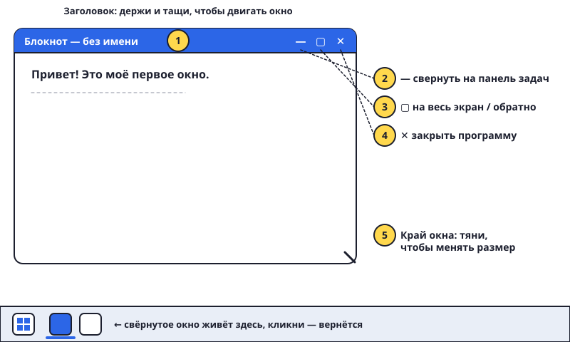

Окна: открыть, свернуть, закрыть
Каждая программа открывается в своём окне. Windows так и переводится — «окна».

Шаги
- Открой любую программу двойным кликом — например, «Калькулятор» или «Блокнот» (найди их через Пуск). Появилось окно.
- Смотри в правый верхний угол окна. Там три кнопки: — свернуть, ▢ развернуть на весь экран, ✕ закрыть.
- Свернуть (—) — окно прячется вниз, на панель задач, но не закрывается. Кликни на его значок внизу — оно вернётся.
- Развернуть (▢) — окно на весь экран. Нажми ещё раз — станет маленьким.
- Закрыть (✕) — программа выключается. Если ты что-то писал и не сохранил, она спросит: «Сохранить?»
- Двигаем окно: нажми на верхнюю полоску окна (она называется заголовок), держи и тащи.
- Меняем размер: подведи курсор к краю окна, он станет стрелочкой ↔, держи и тяни.
- Несколько окон сразу. Открой две программы. Переключайся между ними кликом по значкам на панели задач или так: держи Alt и нажимай Tab.
Попробуй сам: открой Калькулятор и Блокнот. Поставь их рядом, чтобы оба было видно. Сверни один, разверни другой на весь экран, потом закрой оба.
Хитрость: перетащи окно к левому краю экрана — оно само займёт ровно половину. Второе перетащи к правому краю.